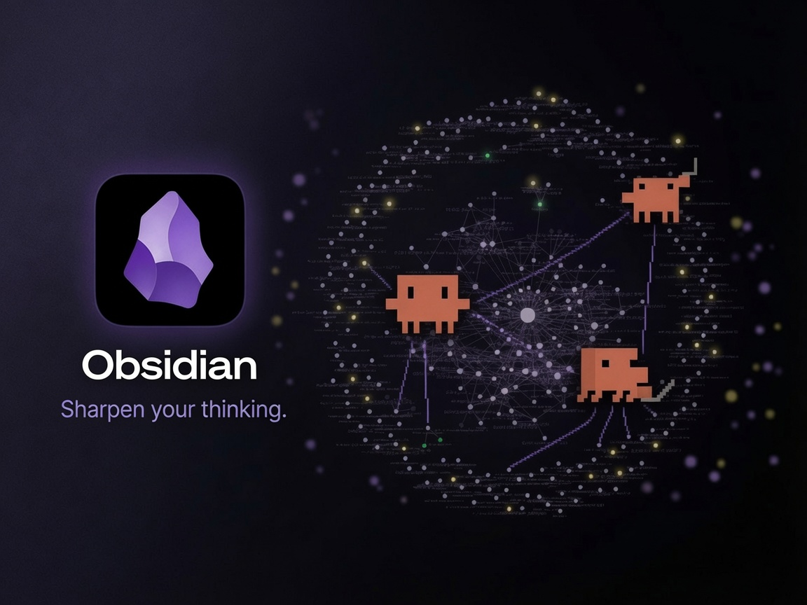

Tools
業務基盤 / AI社員
Obsidian連携で育てるAI社員（自分の分身）
Obsidianのノートを“自分の脳”としてAIに読み込ませ、仕事のやり方や判断基準を覚えさせることで、自分の代わりに動くAI社員を育てます。一問一答のチャットで終わらせず、使うほど賢くなる資産型の仕組みです。

概要
セットアップ
コード不要 / 日本語で頼むだけ
脳の置き場所
Obsidianのノート
育て方
使うほど賢くなる（資産型）
課題と解決
Before
AIに毎回ゼロから前提を説明し直す。チャットの結果は使い捨てで、自分の仕事のやり方や判断基準は頭の中にあるだけ。繰り返しの面倒な作業は、結局いつも自分でやることになる。
After
自分の知識・判断基準・仕事の型をObsidianに溜め、AI社員がそれを毎回読み込んで自分の代わりに動く。指示や型がノートに資産として積み上がり、使うほど自分の分身に近づいていく。
使い方
01
Obsidianの保管庫（ただのフォルダ）を、AI社員が働く場所として用意する（初回のみ）
02
自分の仕事のやり方・判断基準をノートに書く。AIがヒアリングしながら一緒に埋めてくれる
03
繰り返している業務を1つ任せる。役割ごとにAI社員を分け、成果物をノートに残していく
背景
AIを一問一答のチャットで終わらせるのは、本当の価値を取りこぼしていると感じていました。お金を資産として積み上げるのと同じで、AIへの指示も使い捨てにせず「型」として残せば、複利で賢くなっていきます。Obsidianを自分が見やすい“脳”の置き場、AIを実際に手を動かす“社員”として役割を分け、同じノートを共有させる構成にしました。必要に応じてメールやカレンダーといった「今」の情報にもつなげられますが、核心は自分の知識を資産として溜め、自分の分身を育てることにあります。
使用技術
Claude Code
Obsidian
MCP / コネクタ連携
AIエージェント
バイブコーディング